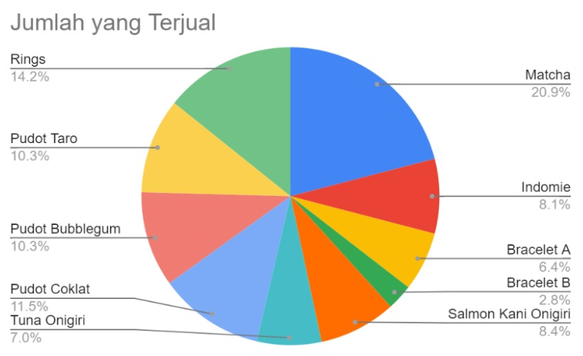
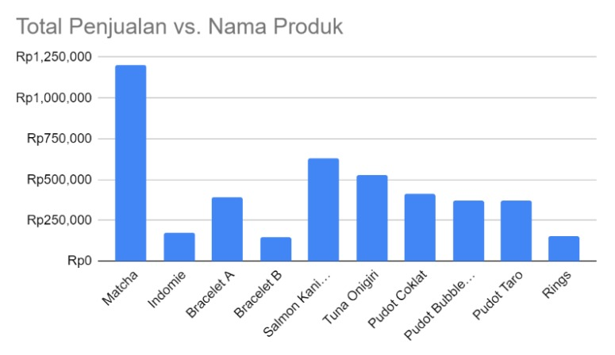
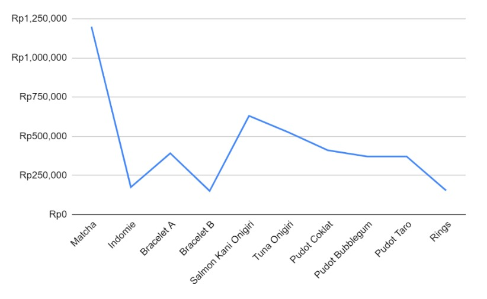

Statistik Jualan
| No | Nama Produk | Jumlah yang Terjual | Total Penjualan |
| 1 | Bracelet B | 10 | Rp150,000 |
| 2 | Bracelet A | 23 | Rp391,000 |
| 3 | Tuna Onigiri | 25 | Rp525,000 |
| 4 | Indomie | 29 | Rp174,000 |
| 5 | Salmon Kani Onigiri | 30 | Rp630,000 |
| 6 | Pudot Bubblegum | 37 | Rp370,000 |
| 7 | Pudot Taro | 37 | Rp370,000 |
| 8 | Pudot Coklat | 41 | Rp410,000 |
| 9 | Rings | 51 | Rp153,000 |
| 10 | Matcha | 75 | Rp1,200,000 |



|
Berdasarkan tabel dan diagram-diagram di atas, terlihat bahwa produk terlaris kami merupakan matcha dengan 75 botol yang terjual yang telah menghasilkan Rp1,200,000. Sedangkan produk yang paling sedikit terjual adalah bracelet B dengan 10 gelang yang terjual dan menghasilkan Rp150,000. Total penjualan pudot taro dan pudot coklat kami dua-duanya terjual 37 botol, masing-masing rasa menghasilkan Rp370,000.
Dari tabel di atas, kami dapat melihat bahwa 3 produk terlaris kami adalah matcha dengan 75 botol terjual yang membuat 20.9% total penjualan, bead rings dengan 51 cincin terjual yang membuat 14.2% total penjualan, dan pudot coklat dengan 41 botol terjual yang membuat 11.5% total penjualan, sementara 3 produk kami yang paling sedikit terjual adalah bracelet B dengan 10 gelang terjual yang membuat 2.8% total penjualan, bracelet A dengan 23 gelang terjual yang membuat 6.4% total penjualan, dan tuna onigiri dengan 25 buah terjual yang membuat 7.0% total penjualan. Sedangkan 3 produk kami yang menghasilkan uang terbanyak adalah matcha yang menghasilkan Rp1,200,000, salmon kani onigiri yang menghasilkan Rp630,000, dan tuna onigiri yang menghasilkan Rp525,000, sementara 3 produk kami yang menghasilkan uang paling sedikit adalah bracelet B dengan Rp.150,000, bead rings dengan Rp153,000, dan indomie kotak dengan Rp174,000.
|